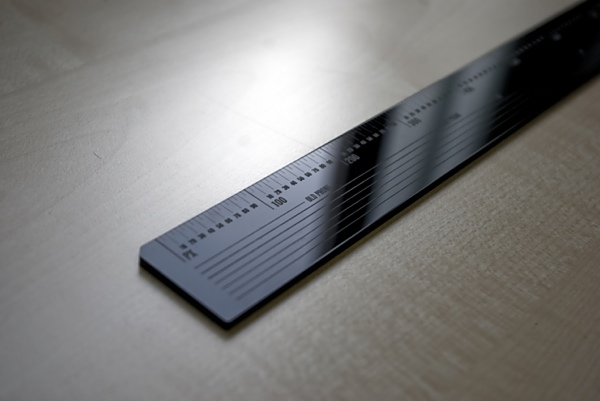
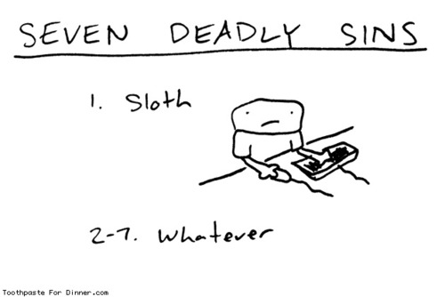

Everything counts
И еще депешей
И еще депешей
Дмитрий Чернышев сформулировал, а мне только остается подписаться:
Я ... считаю, что Владимир Путин - заурядный диктатор; что церковь должна быть отделена от государства; что женщина имеет право на аборт; что можно и нужно использовать органы погибшего человека для спасения живого; что умирающий человек имеет право на эвтаназию; что геи и лесбиянки должны иметь такие же права, как и остальные люди; что водка гораздо опаснее, чем марихуана; что любая нация имеет право на самоопределение; что деление людей на своих и чужих по религии и "крови" - опаснейший средневековый предрассудок...

Клевая линейка.
В Снобе сделана удобная навигация по картинкам, когда контрол скроллится вместе с контентом и не надо переносить мышу.
Нашел недавно клевый блог про архитектуру и не только. Бонус.

Круто снято как. Или вот про халфпайп.
Музыка лет.
I felt only night within me and it was then that I conceived the new art, which I called Suprematism. — Malevich.
Клевая реклама масла или какого-то его заменителя что-ли :)